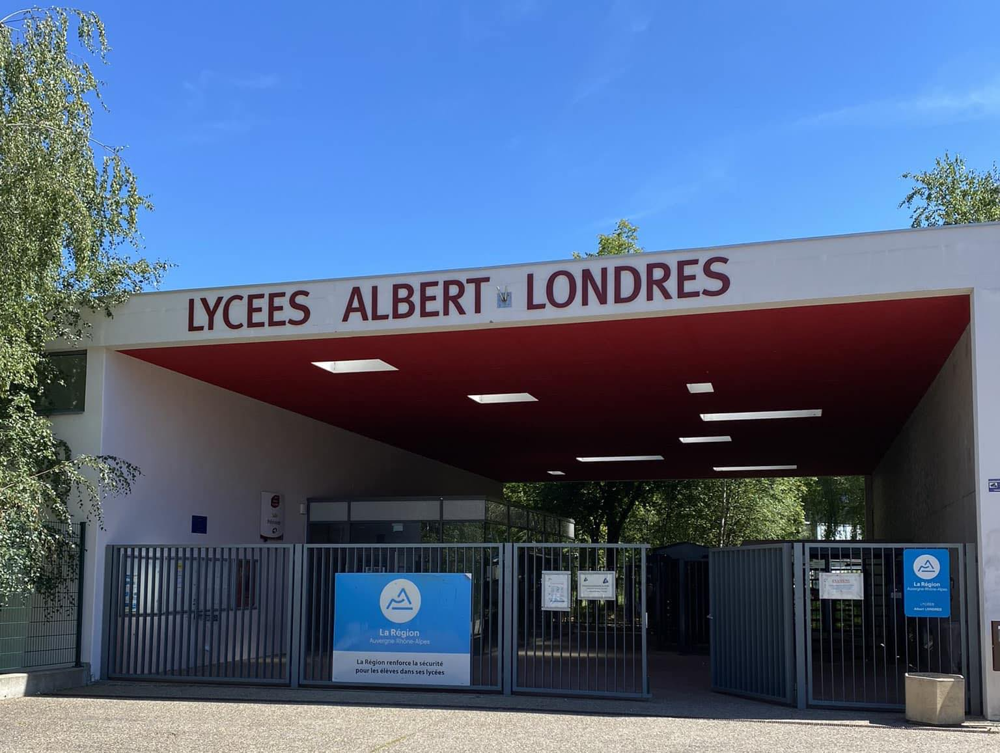

Qu'est-ce que le BTS SIO?
Le BTS SIO (Services Informatiques aux Organisations) est un diplôme de l'enseignement supérieur français de niveau bac+2. Il est axé sur les métiers de l'informatique et des systèmes d'information au sein des organisations. Ce diplôme forme les étudiants à la conception, au développement, à la mise en œuvre et à la gestion des services informatiques au s ein des entreprises.
Le BTS SIO Est Structuré En Deux Options :
- Option "Solutions d'infrastructure, systèmes et réseaux" (SISR) : Cette option forme les étudiants à la gestion des infrastructures informatiques, à la mise en place et à la maintenance des réseaux, des systèmes et des services associés.
- Option "Solutions logicielles et applications métiers" (SLAM) : Cette option met l'accent sur le développement, la mise en place et la maintenance des applications informatiques, ainsi que sur l'intégration des solutions logicielles adaptées aux besoins métiers des organisations.
Cours Et Certifications
Les cours en BTS SIO comprennent les matières générales, mais aussi des matières spécialisées comme l'architecture des systèmes d'information, la programmation. les bases de données, la cybersécurité, la gestion de projet, mais aussi des Certifications pour les étudiants ayant choisis l'option SISR


Le lycée Albert Londres possède plusieurs partenariats avec des entreprises tels que Cisco, Stormshield, VMWare et Microsoft, ce qui permet aux apprenants d'avoir accès a un très large panel d'outils et de formations favorisant leur apprentissage.
Le lycée technologique Albert Londre
Le lycée Albert Londres, situé à Vichy, est un établissement réputé pour la qualité de son enseignement. Je l'ai choisi car les enseignants compétents et les ressources pédagogiques permettent de développer nos compétences dans des conditions optimales.
